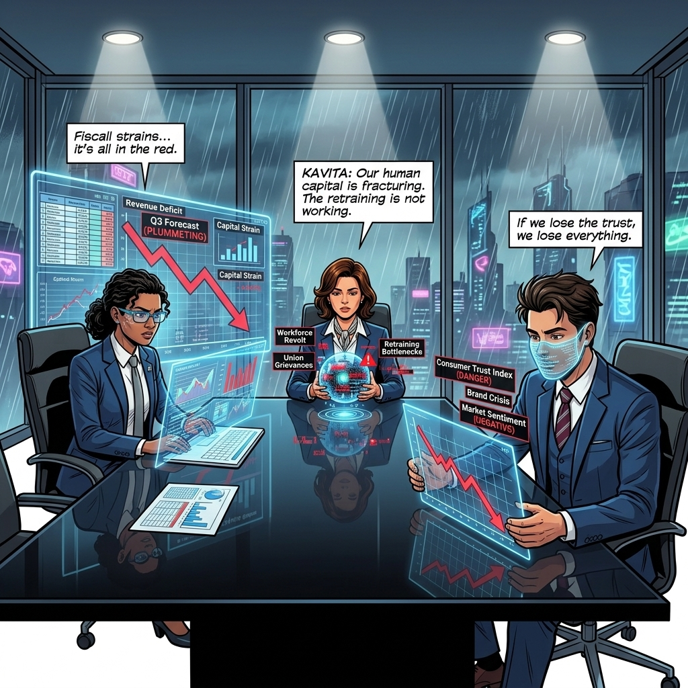
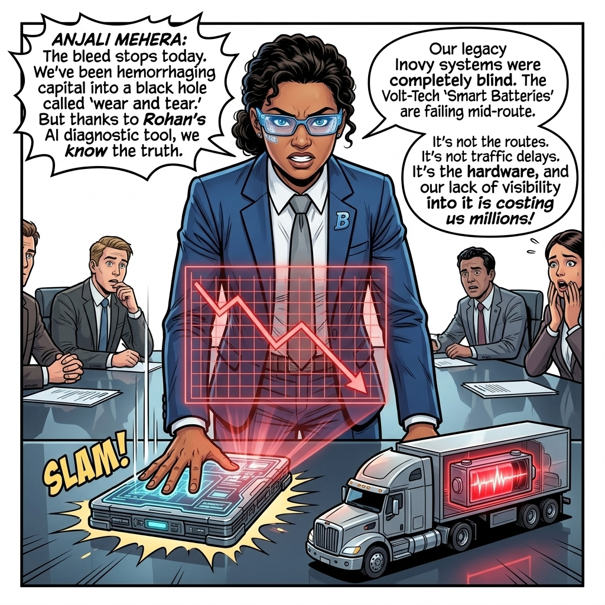
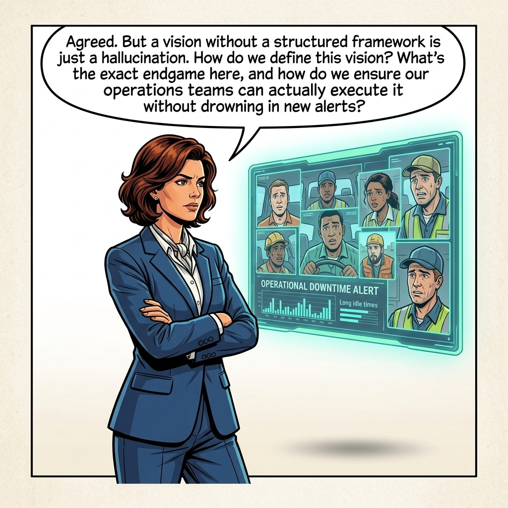
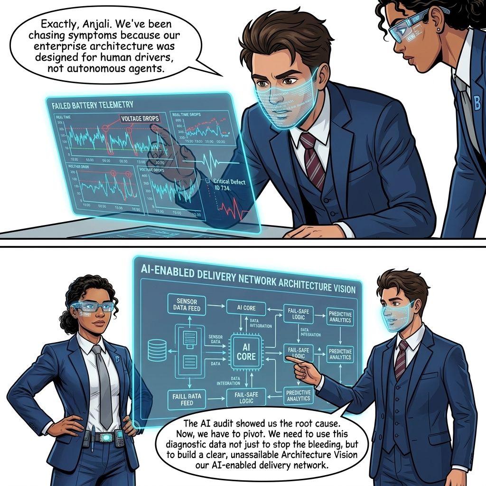
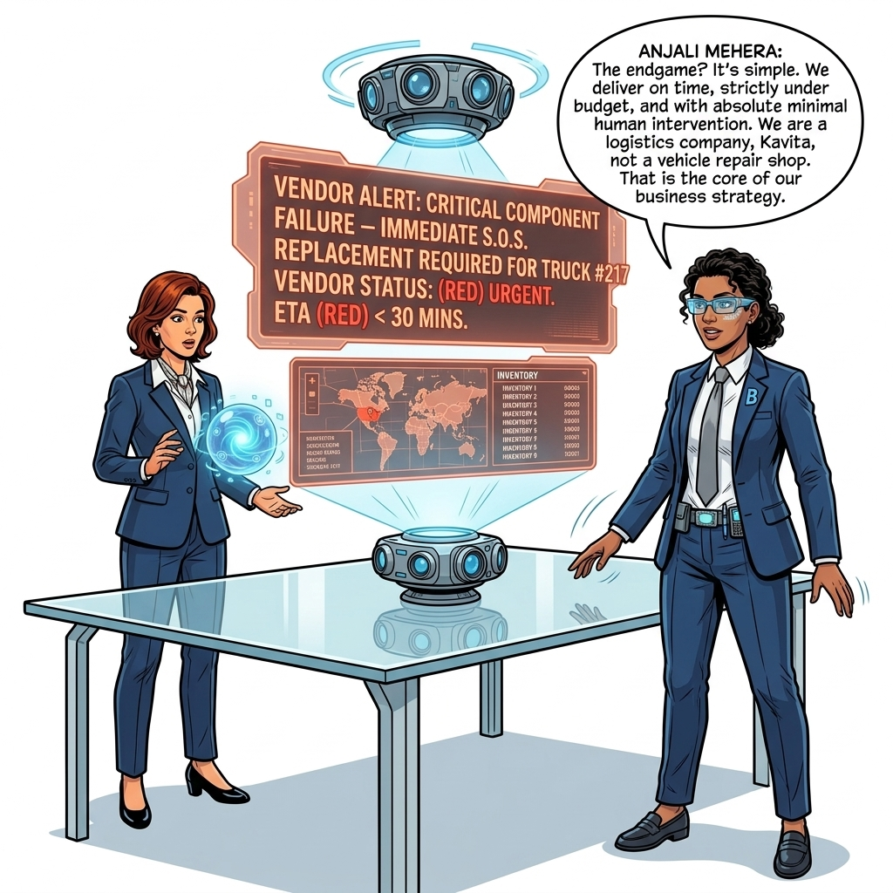
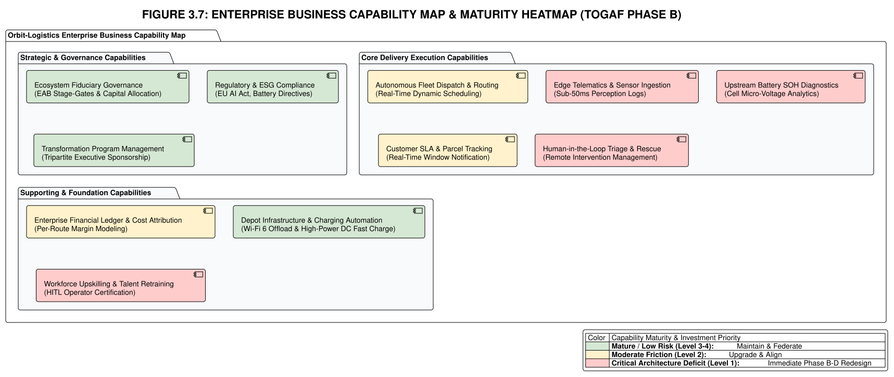

The Productivity Paradox
Defining the Architecture Vision

"Let us activate the cameras. We transition from the telemetry bay into the Executive Boardroom of Orbit-Logistics. Outside, rain lashes the floor-to-ceiling glass. Armed with the forensic telemetry and Diagnostic Audit Dossier from Chapter 2, Anjali Mehra is ready to confront the board. Look at the three leaders around the obsidian table: Anjali Mehra (Fiscal Architect), Kavita Joshi (Human Capital), and Rohan Gupta (Risk Guardian). Watch as the boardroom friction reaches boiling point."
The Storyline: Confrontation in the Executive Boardroom


SLAM!



"Let us pause the stage. Why does Anjali propose an 'Architecture Vision' (Phase A)? In TOGAF ADM, Phase A defines project boundaries, aligns cross-functional stakeholders, and establishes the business case. Anjali realizes that reactive maintenance is a financial sinkhole. By defining this vision, she shifts the burden of quality and telemetry intelligence back upstream to the manufacturer, Volt-Tech. To make this vision enforceable, the board must now formulate four mission-critical Phase A artifacts: the Request for Architecture Work, the Business Capability Map, the Transformation Readiness Assessment, and the Architecture Risk & Mitigation Table."
Architecture Vision: Target State Ecosystem Concept Diagram
In accordance with TOGAF® Phase A standards (Mandatory Architecture Vision Deliverables), the target operating state is synthesized into an integrated, 3-tier architectural concept diagram spanning the On-Vehicle Edge, Depot / Factory Edge, and Enterprise Cloud Lakehouse:
TOGAF Phase A Architecture Vision • Tripartite Ecosystem Integration
- INT8 TinyML BMS: In-RAM cell impedance inference (≤15ms)
- TPM 2.0 Signer: Hardware cryptographic notarization
- 4-Hour NVMe Buffer: Dead-zone offline resilience
- PII RAM Scrubber: Inline ≤5ms biometric redaction
- HITL Triage Console: Sub-15 min human expert review
- Depot SoC Monitor: Automated charging queue dispatch (≥30% SoC)
- Wi-Fi 6 Bulk Offload: Tier-3 heavy snapshot transfer
- Supplier Battery Bridge: Volt-Tech warranty verification
- Telemetry Lakehouse: Multi-region active-active cluster
- Real-Time Cost Engine: Loaded unit cost ≤$1.85/mile
- DPP Registry: EU Battery Directive compliance log
- EAB Governance Vault: 3-year WORM audit trail
1. Request for Architecture Work (RfAW)
In the TOGAF framework, Phase A: Architecture Vision begins formally with the Request for Architecture Work (RfAW). The RfAW represents the executive commission triggered by business distress: it defines business goals, strategic constraints, organizational scope, budget limits, and success metrics that authorize the Enterprise Architecture Board (EAB) to initiate architectural redesign.
"Observe the precision of the RfAW document. In dysfunctional enterprises, AI projects are launched with vague aspirations like 'explore machine learning for fleet efficiency.' That is how billions are wasted. At Orbit-Logistics, Anjali, Kavita, and Rohan construct an ironclad commission. Every dollar of the $24M Phase A-D budget is tied to quantifiable loss recovery, supplier compliance clauses, and workforce transition milestones."

"Activity 1: Executive Commissioning & Scope Boundary Definition. The three executive sponsors formalize the problem statement: stem the $50M/quarter bleed by transforming reactive fleet operations into an integrated, telemetry-driven autonomous logistics network with upstream supplier accountability."
"Core Decision 1: Unanimous Three-Seat Governance Lock. As Executive Chair, I mandate that no architecture phase will pass Stage-Gate review without joint sign-off across all three domains: Fiscal ROI (Anjali), Workforce Trust & Retraining (Kavita), and Risk/Regulatory Compliance (Rohan). This eliminates the organizational silos that permitted the original failure."
Formal Request for Architecture Work (RfAW-001) Document
Project Title & ID
- Charter Content & Mandate Specification: Intelligent Fleet & Upstream Battery Telemetry Architecture (Project Titan-Eye) | Ref:
RfAW-ORBIT-2026-001
Executive Sponsors
- Charter Content & Mandate Specification: Anjali Mehra (CFO & Fiscal Architect), Kavita Joshi (Chief People Officer), Rohan Gupta (Chief Risk Officer).
Business Problem Statement
- Charter Content & Mandate Specification: The Autonomous Delivery Network (AD-Net) is suffering a $50M/quarter operational loss caused by sub-cycle Volt-Tech battery micro-voltage collapses, unlogged hesitation loops, and massive human teleoperation costs, masked behind legacy TMS/EAM reporting.
Strategic Objectives & Vision
- Charter Content & Mandate Specification: 1. Deploy real-time in-RAM diagnostic edge inference across 10,000 delivery vehicles.
2. Force upstream supplier Volt-Tech to embed edge intelligence and a Digital Product Passport into all smart batteries.
3. Transition depot staff and dispatchers into a certified Human-in-the-Loop (HITL) diagnostic operations tier.
Scope & Boundaries
- Charter Content & Mandate Specification: In-Scope: 10,000 Level-4 delivery vehicles, Central Ingestion Lakehouse, Volt-Tech Battery BMS interface, HITL Triage Console, Depot Wi-Fi 6 offload hubs.
Out-of-Scope: Redesign of base vehicle chassis or mechanical powertrain (managed by Tier-1 OEM).
Budget & Time Horizon
- Charter Content & Mandate Specification: CapEx/OpEx Allocation: $24.0M total Phase A–D transformation budget; 6-month delivery window to first fully verified 1,000-vehicle pilot.
Success Metrics & SLAs
- Charter Content & Mandate Specification: 1. Reduce quarterly operational loss by ≥ 70% ($35M/quarter recovery) within 9 months of full rollout.
2. 100% root-cause categorization precision (≤ 0% default 'traffic' tags).
3. Zero regulatory non-compliance fines under GDPR and EU AI Act Article 12.
Phase A Strategic Objectives & Key Results (OKRs)
In accordance with TOGAF® Phase A best practices, the high-level Architecture Vision is translated into quantifiable, time-bounded Objectives and Key Results (OKRs). These OKRs bind executive sponsors across Fiscal, Operational, Human Capital, and Risk domains into unified fiduciary accountability:
| Domain & Executive Owner | Strategic Objective | Key Results (Quantifiable Target Metrics) | Fiduciary & Architectural Alignment |
|---|---|---|---|

Fiscal Architecture
Anjali Mehra (CFO) |
OKR-1: Eliminate the $50M/quarter cash bleed, recover uninstrumented hardware CapEx, and establish profitable autonomous unit economics. |
• KR 1.1: Reduce quarterly operational loss from -$50.0M to ≤ -$5.0M by Month 9; achieve full breakeven by Month 12. • KR 1.2: Enforce supplier battery warranties via DPP telemetry logs, clawing back ≥ $14.2M in unallocated CapEx. • KR 1.3: Reduce emergency towing and teleoperation OpEx from $1,850/van/mo to ≤ $220/van/mo. |
Fiduciary Duty of Care; eliminates speculative AI funding and mandates audited ROI payback < 12 months. |

Operational Diagnostics
Rajesh Iyer / Kavita Joshi |
OKR-2: Eliminate catastrophic roadside battery collapses and establish deterministic edge-to-cloud diagnostic visibility. |
• KR 2.1: Slash roadside vehicle collapse rates from 18.4% to < 0.1% across 10,000 active delivery routes. • KR 2.2: Guarantee sub-10ms INT8 in-RAM battery state estimation with ≥ 99.95% MQTT telemetry uptime. • KR 2.3: Eliminate 100% of generic legacy 'traffic anomaly' masking tags in favour of true root-cause diagnostic codes. |
Principle 1 (Anti-Obfuscation) & Principle 2 (Edge Reality); guarantees deterministic firmware-level visibility. |

Workforce Agency
Kavita Joshi (CPO) |
OKR-3: Overcome workforce revolt, eliminate automation distrust, and transition staff into certified Human-in-the-Loop (HITL) triage specialists. |
• KR 3.1: Retrain and certify 100% of frontline dispatchers and mechanics (1,200 staff) into Level-2 HITL triage operators within 6 months. • KR 3.2: Lower technician hesitation-induced false safe-stops by ≥ 85% via explainable AI telemetry dashboards. • KR 3.3: Achieve ≥ 80% positive technician trust and system usability index scores in quarterly audits. |
Principle 4 (Augmented Agency); transitions workers from passive victims of automation into empowered diagnostic arbiters. |

Risk & Governance
Rohan Gupta (CRO) |
OKR-4: Eliminate algorithmic opacity liabilities and guarantee full compliance with international AI and battery regulations. |
• KR 4.1: 100% compliance with EU AI Act (Article 12 automated logging) and EU Battery Regulation (2023/1542 DPP traceability). • KR 4.2: Zero regulatory fines and zero audit dispensations exceeding the 90-day EAB variance window. • KR 4.3: 100% of smart batteries backed by tamper-proof ASIL-D HSM cryptographic provenance signatures. |
Principle 3 (Cryptographic Provenance) & Principle 5 (Architectural Sovereignty); ensures zero liability exposure. |
2. Business Capability Mapping & Heatmap
A critical component of TOGAF Phase A is translating strategic intent into the Business Capability Map. Capabilities define what an enterprise must be able to do to deliver its business vision, independent of technical implementation. The capability heatmap visualizes current maturity deficits and highlights where architectural investment must be concentrated.
"Look at the capability grid. Before you change systems or write software, you must know what abilities the business currently possesses versus what it lacks. Orbit-Logistics had world-class delivery routing capabilities (Level 1), but was completely bankrupt in diagnostic telemetry and supplier battery arbitration (Level 2). Notice how the capability heatmap exposes red deficit areas directly responsible for the $50M bleed."

"Activity 2: Enterprise Capability Heatmapping. The architecture board decomposes Orbit's logistics operations into four core capability domains: Fleet Autonomy, Predictive Battery Diagnostics, Risk-Adjusted Unit Economics, and Human-AI Collaboration, evaluating both Level 1 and Level 2 sub-capabilities."
"Core Decision 2: Surgical Capability Uplift Over Monolithic Rebuild. Rather than replacing the existing Fleet Management System, we decide as enterprise architects to isolate and uplift only the three red deficit capabilities (Sub-cycle Battery Ingestion, Real-Time Unit Cost Ledger, and HITL Triage). This slashes implementation timeline from 24 months to 6 months while protecting baseline logistics operations."
Business Capability Maturity & Deficit Heatmap Matrix
To evaluate capability deficits and prioritize architectural interventions across Orbit-Logistics, enterprise architects assess capabilities across 4 key domains against whole-number maturity stages (Level 0 to 5):
3. Transformation Readiness Assessment
Before executing the Architecture Vision, TOGAF Phase A mandates a Transformation Readiness Assessment to measure the organization's capacity to absorb the proposed changes. This identifies cultural, operational, and technical friction points.
"Activity 3: Assessing Organizational Capacity for Change. I mapped our readiness across six critical vectors. The hardware supply chain is completely broken (35% readiness), and our depot workforce is terrified of automation replacing them (40% readiness)."
"Core Decision 3: The $4.5M Retraining Escrow. You cannot mandate a digital transformation on a terrified workforce. I convinced Anjali to establish a ring-fenced $4.5M retraining escrow. We are guaranteeing wage floors and certifying 2,500 frontline depot dispatchers as high-tier 'Autonomous Triage Specialists'. That single decision moved our cultural readiness from 40% to 85%."
Transformation Readiness Factor Assessment Matrix
The matrix evaluates six critical readiness dimensions. Scores below the 50% Critical Risk Ceiling indicate areas where transformation will fail without mandatory fiduciary or cultural intervention.
Transformation Readiness Remediation Roadmap
To lift all organizational dimensions above the 50% Critical Risk Ceiling prior to Phase B execution, the EAB mandates time-bounded remediation work streams:
| Readiness Dimension | Baseline Score | Critical Floor | Target Score | Mandated Remediation Action | Execution Timeline | Lead Owner |
|---|---|---|---|---|---|---|
| Cultural Readiness | 35% (Critical) | 50% | 85% (High) | Deploy ring-fenced $4.5M retraining escrow; certify 2,500 dispatchers as Autonomous Triage Specialists. | Months 1–6 | Kavita Joshi (CPO) |
| Technical Infrastructure | 42% (Critical) | 50% | 80% (High) | Deploy WP-01 Lakehouse + 3-Tier Telemetry offloader across 10,000 vehicles. | Months 1–4 | Engineering Lead |
| Supplier Ecosystem | 30% (Critical) | 50% | 70% (Solid) | Volt-Tech PO freeze; enforce DPP contract terms and open BMS cell telemetry access. | Months 0–3 (Immediate) | Anjali Mehra (CFO) |
| Regulatory Governance | 65% (Above Floor) | 50% | 90% (Exemplary) | Codify EU AI Act Art. 12 automated logging and in-RAM zero-trust PII redaction. | Months 1–3 | Rohan Gupta (CRO) |
| Data Architecture | 45% (Critical) | 50% | 85% (High) | Implement WP-01 Lakehouse + deterministic 5-category failure taxonomy. | Months 1–3 | Chief EA (Narayan) |
| Financial Governance | 60% (Above Floor) | 50% | 90% (Exemplary) | Enforce tranche-gated $24M budget release tied to verified stage-gate milestones. | Immediate | Anjali Mehra (CFO) |
4. Architecture Risk & Mitigation Table
Architecture transformations inside high-stakes physical environments carry significant risk. In TOGAF Phase A, the Architecture Risk Assessment identifies technical, commercial, organizational, and regulatory risks, establishes their initial impact vs. probability, defines preventative and recovery safeguards, and measures the residual risk profile.
"Look at Rohan Gupta's Bow-Tie Risk Analysis board. Risk management is not about hoping bad things won't happen; it is about building deterministic engineering and legal barriers that make catastrophic failure mathematically improbable. Look at how each threat—supplier rebellion, edge latency blowouts, biometric privacy fines—is neutralized by a concrete architectural safeguard."
"Activity 4: Systematic Risk Quantification & Bow-Tie Mapping. Rohan Gupta analyzes failure scenarios, mapping threat causes on the left, central catastrophic incidents in the middle, and recovery safeguards on the right."
"Core Decision 4: Non-Negotiable Residual Risk Ceilings. The Enterprise Architecture Board rules that no work package may be promoted to Phase B/C/D if its residual risk rating remains 'High'. As Executive Chair, if an upstream supplier or internal team cannot reduce residual risk to 'Low' or 'Moderate', we mandate immediate architectural circuit-breakers."
Residual Risk & Ownership Assignment
After enforcing technical safeguards, all risks are downgraded to acceptable thresholds and securely bound to designated C-suite sponsors to ensure continuous accountability.
Volt-Tech refuses to open proprietary BMS protocols, preventing cell-level diagnostic telemetry ingestion. Fleet operations are blinded during rapid acceleration torque surges, triggering violent unlogged safe-stops and hemorrhaging $50M quarterly.
Fiduciary Ultimatum & PO Freeze: Orbit-Logistics freezes $120M in annual battery procurement contracts. Mandates open Digital Product Passport telemetry standards and SHA-256 cryptographic cell lineage tracking into all vendor RFPs and purchase covenants.
Depot dispatchers and drivers resist automated reporting tools, fear replacement layoffs, and deliberately bypass unlogged telemetry exceptions, causing operational friction and corrupting diagnostic training data.
HITL Co-Design & $4.5M Retraining Escrow: Allocate a ring-fenced $4.5M human capital retraining escrow. Certify 2,500 frontline depot staff into high-tier "Autonomous Triage Specialists" with guaranteed wage floors and safety performance incentives.
Complex multimodal diagnostic models exceed onboard compute limits, causing safety control latency spikes (> 15ms) and triggering violent vehicle safe-stops.
Asynchronous Execution & INT8 Quantization: Enforce strict process isolation between safety control loops and diagnostic inference. Execute INT8 quantized models on dedicated NPU accelerators with guaranteed sub-15ms turnaround.
Unredacted pedestrian faces or vehicle license plates captured by edge sensors offloaded over cellular networks, triggering GDPR Article 83 and EU AI Act fines up to $20M or 4% global turnover.
Zero-Trust Volatile RAM Scrubber & TPM 2.0: Mandate 100% real-time face/plate redaction in volatile RAM prior to non-volatile disk write. Secure all telemetry with TPM 2.0 hardware-backed cryptographic signing and isolated compliance audit logs.
5. Statement of Architecture Work (SoAW-001)
In accordance with TOGAF® Phase A Step 8 directives, the final deliverable and legal contract concluding Phase A is the Statement of Architecture Work (SoAW). While the Request for Architecture Work (RfAW) represents the business commission triggering Phase A, the SoAW represents the binding contractual agreement between the Enterprise Architecture capability and the executive sponsors that authorizes execution of Phases B, C, and D.
"Enterprise Architect Decision: Step 8 — Formal Statement of Architecture Work Sign-Off. In undisciplined organizations, teams rush from a vague PowerPoint vision straight into software development. That is the exact recipe for the $50M quarterly catastrophe we are diagnosing."
"In accordance with TOGAF Rule VIS-01, no engineer writes a line of code and no procurement team cuts a supplier check without an approved Statement of Architecture Work. This document freezes scope boundaries, locks the $24M budget escrow, and establishes the binding EAB stage-gates governing Phases B through D."
Document Header & Authority
Artifact ID: SoAW-ORBIT-2026-001 | Version: 1.0 (Ratified Final)
Project Title: Autonomous Fleet Edge-to-Cloud Telemetry & Smart Battery Provenance
Lead Enterprise Architect: Narayan Debnath (Executive Chair, Cross-Enterprise EAB)
Approved Architecture Scope & Work Packages
- WP-1: Target Business Architecture (Phase B): Silicon-to-Cloud Fusion Pod operating model, AIAG APQP supplier audits, and Depot Turnaround Optimization.
- WP-2: Data Architecture (Phase C1): Digital Product Passport (DPP) canonical metamodel, Protocol Buffers v3 telemetry schemas, and time-series lakehouse ingestion.
- WP-3: Application Architecture (Phase C2): Multimodal Diagnostic Inference microservices, HITL Triage Console, and Automated Root-Cause Classifiers.
- WP-4: Technology Architecture (Phase D): ISO 26262 ASIL-D dual-core lockstep HSM, INT8 TinyML SRAM edge runtime, and Wi-Fi 6 depot offload gateways.
SCOR Delivery Service Acceptance Criteria & Target KPIs
- Reliability (RL.1.1): Perfect Shipment Delivery ≥ 99.8% (zero unlogged halts, undamaged parcels, cryptographic PoD).
- Responsiveness (RS.1.1): Order Fulfillment Cycle Time ≤ 1.5 hours across priority metro routes.
- Agility (AG.1.1): Upside Delivery Flexibility absorbing a 20% volume surge in ≤ 4 hours without backlog.
- Cost (CO.1.1): Loaded Cost per Mile reduced from $4.20 to ≤ $1.85 (achieving ≥ 22% EBITDA margin).
- Asset Management (AM.1.1): Fleet Utilization ≥ 88% cargo cubic capacity and ≥ 98% active fleet vehicle uptime.
Resource Commitments & Budget Escrow
- Total Approved Budget: $24.0M ($14.2M reallocated from vertical cell R&D + $9.8M digital transformation fund).
- Workforce Retraining Escrow: $4.5M ring-fenced under Kavita Joshi for Level-2 HITL technician certification.
- EAB Technical Debt Contingency: $2.5M capital reserve for time-bounded 90-day variance remediation.
Binding Governance & Stage-Gate Checkpoints
- Gate 1 (Vision & OKR Gate — Phase A): PASSED & SIGNED (This Document).
- Gate 2 (Design Gate — Phases B, C, D): Mandatory audit of Protobuf schemas, ASIL-D lockstep boundaries, and partner supply SLAs.
- Gate 3 (Production Readiness Gate — Phase G): Prerequisite for 1,000-vehicle pilot cutover; requires unanimous 3-seat approval.
- Gate 4 (Change & Evolution Gate — Phase H): Annual review of model retraining drift and dynamic ACR adjustments.
Formal Fiduciary Sign-Off Matrix
| Fiduciary Seat | Executive Signatory | Sign-Off Mandate & Approval Scope | Status & Verification |
|---|---|---|---|
| Fiscal Architecture |
Anjali Mehra
CFO, Orbit-Logistics |
Approved $24M CapEx/OpEx allocation, $14.2M warranty clawback mandate, and audited 11.4-month payback model. | ✔ RATIFIED & SIGNED |
| Human Capital / Operations |
Kavita Joshi
Chief People Officer, Orbit-Logistics |
Approved $4.5M retraining escrow, HITL triage operating charters, and 1,200 technician certification plan. | ✔ RATIFIED & SIGNED |
| Risk & Compliance |
Rohan Gupta
Chief Risk Officer, Orbit-Logistics |
Approved zero-trust biometric RAM scrubbing, ASIL-D HSM security boundaries, and EU AI Act compliance architecture. | ✔ RATIFIED & SIGNED |
| Enterprise Architecture Authority |
Narayan Debnath
Executive Chair, Joint EAB |
Certified TOGAF ADM Phase A compliance, multi-enterprise metamodel alignment, and authorized Phase B launch. | ✔ RATIFIED & EXECUTED |
KPI Measurement & Verification Methodology Matrix
In accordance with TOGAF® Rule VIS-03, every business goal and SLA in the Architecture Vision must have an unambiguous, mathematically verifiable measurement methodology, data source, and accountable owner:
| Target Metric / KPI | Current Baseline | Target SLA | Measurement Source & Mechanism | Sampling Frequency | Accountable Owner |
|---|---|---|---|---|---|
Loaded Cost per Mile (CO.1.1) |
$4.20 / mile | ≤ $1.85 / mile | ABB-FIN-01 Real-Time Unit Economics Engine + ERP Ledger |
Per delivery route; daily aggregate | Anjali Mehra (CFO) |
| Roadside Collapse Rate | 18.4% of dispatches | < 0.1% | Fleet Telemetry Lakehouse (unplanned stoppage audit) | Real-time; 30-day rolling average | Rohan Gupta (CRO) |
Perfect Shipment Delivery (RL.1.1) |
~84.2% | ≥ 99.8% | TMS + Cryptographic Proof-of-Delivery (PoD) tokens | Per shipment; daily scorecard | Fleet Operations Lead |
Order Fulfillment Cycle Time (RS.1.1) |
4.8 hours | ≤ 1.5 hours | Route dispatch timestamp to customer drop-off confirmation | Continuous per delivery | Fleet Operations Lead |
Fleet Active Uptime (AM.1.1) |
76% active fleet | ≥ 98% | EAM + Onboard heartbeat telemetry stream | Real-time continuous; weekly summary | Engineering Lead |
| Towing & Rescue OpEx | $1,850 / van / month | ≤ $220 / van / month | Financial accounts payable vs. recovery dispatch records | Monthly close audit | Anjali Mehra (CFO) |
| EU AI Act Audit Compliance | Unverified / Manual | 100% Verified | ABB-SEC-03 TPM 2.0 signed immutable audit logs |
100% of autonomous decision events | Rohan Gupta (CRO) |
Architecture Principles Application Log (Traceability to Chapter 1)
In accordance with TOGAF® Rule PRE-01 and VIS-02, every major decision in Phase A traces directly to a foundational Principle established in the Preliminary Phase:
| Phase A Architectural Decision | Governing Principle (Chapter 1) | Enforcement & Fiduciary Application |
|---|---|---|
| Mandate 100% root-cause categorization (≤0% generic tags) | Principle 1: Technological Anti-Obfuscation | Eliminates "traffic delay" masks; classifies every stop into deterministic failure buckets. |
| INT8 in-RAM BMS inference ≤15ms; ASIL-D process isolation | Principle 4: Resilient Edge-First Autonomy | Safety-critical vehicle actuation runs on-vehicle; zero reliance on cloud round-trips. |
| TPM 2.0 SHA-256 signing of 100% telemetry packets | Principle 2: Ecosystem Provenance & Interoperability | Immutable cryptographic chain of custody from vehicle sensors to sovereign lakehouse. |
| $4.5M retraining escrow; HITL technician certification | Principle 5: Augmented Human Agency | Elevates 2,500 frontline dispatchers to certified Autonomous Triage Specialists. |
| Freeze Volt-Tech POs until DPP protocols are open | Principle 3: Fiduciary Value Realization | Capital allocation strictly gated on verifiable outcome targets and supplier telemetry transparency. |
Phase A Stakeholder Communication Plan
To sustain stakeholder trust and prevent organizational drift, the SoAW establishes a structured communication cadence across all stakeholder tiers:
| Stakeholder Group | Cadence & Frequency | Communication Channel | Key Content & Deliverables | Accountable Lead |
|---|---|---|---|---|
| Enterprise Architecture Board (EAB) | Monthly Stage-Gate Reviews + Ad-Hoc | Formal Boardroom Review & Voting | Stage-Gate criteria, risk scorecards, budget escrow audits | Chief EA (Narayan Debnath) |
| Depot Managers & Dispatchers | Bi-Weekly Town Halls | Hybrid Briefing & Q&A Sessions | $4.5M Retraining roadmap, HITL workflow rollout, job security guarantees | Kavita Joshi (CPO) |
| Engineering & DevOps Teams | Weekly Sprint Architecture Demos | Engineering Architecture Forum | Protobuf schemas, ASIL-D MCU specs, ABB/SBB selections | Lead System Architect |
| Volt-Tech Supplier Leadership | Monthly Executive Supplier Reviews | Joint Standards Council Session | DPP compliance progress, BMS firmware milestones, PO release conditions | Anjali Mehra (CFO) |
| Regulatory Compliance Bodies | Quarterly Audit Briefings | Formal Compliance Filing Dossier | EU AI Act Article 12 logs, GDPR biometric redaction audit certificates | Rohan Gupta (CRO) |
Summary: Key Architecture Artifacts Produced in Phase A
- Request for Architecture Work (RfAW-001): Executive commission binding $24M in CapEx/OpEx to a 6-month delivery timeline and $35M/quarter loss recovery target.
- Phase A Strategic OKRs: Quantifiable, time-bounded targets across Fiscal, Operational, Workforce Agency, and Risk Governance domains.
- Business Capability Map & Heatmap: Enterprise capability baseline identifying critical deficits in cell-level battery ingestion, real-time route cost calculation, and HITL triage.
- Transformation Readiness Assessment: Multi-dimensional readiness radar establishing the $4.5M Workforce Retraining Escrow to resolve cultural friction.
- Architecture Risk & Mitigation Table: Comprehensive Bow-Tie risk framework reducing vendor lock-in, edge compute latency, and privacy compliance risks to acceptable residual thresholds.
- Statement of Architecture Work (SoAW-001): Formal ratified architecture contract defining work packages, budget allocations, and stage-gate authorities authorizing Phases B, C, and D.

"Orbit-Logistics has laid down its ultimatum. With the Request for Architecture Work chartered, capabilities mapped, workforce escrow funded, and risk safeguards codified, Anjali Mehra freezes Volt-Tech's purchase orders. This bold Phase A Architecture Vision sends a seismic shockwave upstream through the global supply chain. In Part II, Chapter 4, our cameras shift to Volt-Tech Manufacturing, where Priya Kapoor must build a bulletproof business case to justify the CapEx required to build the Smart Battery."